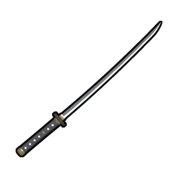
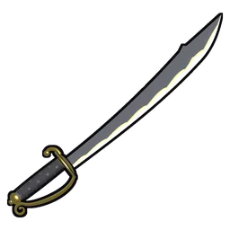
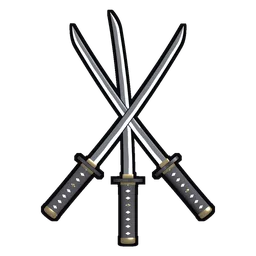
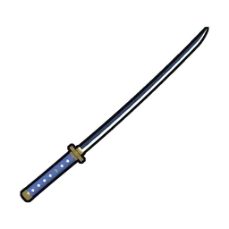

Lames et armes
Les lames se manient au clic gauche (combo) et au clic droit (attaque spéciale). Elles montent en maîtrise à force de frapper, et chaque point de Lame ajoute des dégâts.
Les lames
| Lame | Rareté | Comment l’obtenir | Combo (dégâts par coup) | Attaque spéciale |
|---|---|---|---|---|
 Katana du Novice | Peu commun | 1 500 or (marchand) | 24 + 24 + 36 | 95 |
 Sabre du Novice | Peu commun | 1 500 or (marchand) | 18 + 18 + 20 + 28 | 95 |
 Hache de Mâchefer Hache de Mâchefer | Rare | butin de Kade Mâchefer (25 %) | 32 + 34 + 50 | 110 |
 Les Trois Lames | Épique | 150 000 or (marchand) | 26 + 26 + 30 + 42 | — |
 Katana des Marées | Légendaire | 250 V-Bucks (boutique) | 30 + 30 + 34 + 50 | 130 |
 Khopesh du Gardien Khopesh du Gardien | Légendaire | butin de Gardien de la Pyramide (25 %) | 29 + 29 + 33 + 48 | 135 |
Dégâts de base, avant la maîtrise et les points de Lame. Les Trois Lames n'ont pas de chiffre unique pour l'attaque spéciale : ce sont trois ondes.
Katana du Novice
Katana d'acier poli. Clic gauche : combo de 3 coups. Clic droit : Iaï Éclair, ruée tranchante. +0,5 dégât par point de Lame.
Sabre du Novice
Sabre d'abordage à garde dorée. Clic gauche : combo de 4 coups. Clic droit : Abordage, ruée tranchante qui laisse des entailles dorées. Puissance totale du combo identique au Katana du Novice.
Katana des Marées
Lame légendaire des profondeurs. Clic gauche : combo de 3 coups. Clic droit : Croc de la Marée, onde tranchante qui traverse les ennemis. +0,5 dégât par point de Lame.
Hache de Mâchefer
La hache de Kade Mâchefer, arrachée au tyran de la Citadelle. Clic gauche : combo de 3 coups lourds. Clic droit : Fente de Mâchefer, une onde qui fend le sol. +0,5 dégât par point de Lame.
Les Trois Lames
Trois katanas : un dans chaque main, le troisième entre les dents. Clic gauche : combo de 4 coups tournoyants. Clic droit : Tempête des Lames, trois ondes tranchantes qui filent au loin. +0,5 dégât par point de Lame.
Khopesh du Gardien
L'épée-faucille dorée du Gardien de la Pyramide. Clic gauche : combo de 4 coups (taille, revers, crochet qui ramène l'ennemi, coup du pharaon). Clic droit : Jugement du Soleil, trois ondes dorées qui filent au loin. +0,5 dégât par point de Lame.
Bonus de maîtrise
Plus une lame (ou tes poings) est maîtrisée, plus elle frappe fort. Le bonus s'applique par paliers :
| Maîtrise — Lames | Dégâts en plus |
|---|---|
| 10 | +10 % |
| 50 | +25 % |
| 75 | +35 % |
| 100 | +50 % |
| Maîtrise — Poings | Dégâts en plus |
|---|---|
| 25 | +15 % |
| 60 | +30 % |
| 100 | +50 % |
Armes à feu
| Arme | Prix | Dégâts | Entre deux tirs | Portée |
|---|---|---|---|---|
 Carabine Carabine | 45 000 or | 80 | 2,2 s | 120 m |
Une carabine précise qui tire loin. Munitions illimitées. +1 dégât par point d'Arme, tir à la tête x1,4.